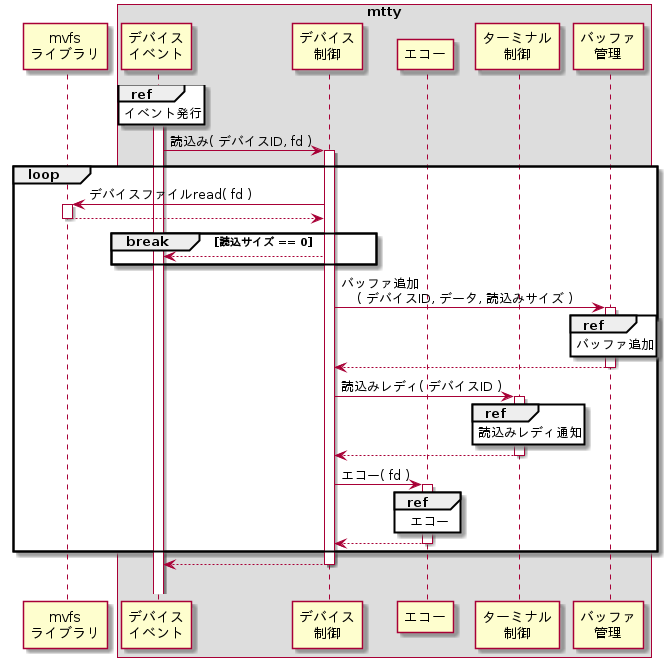

目次
- 概要
- 機能
- グローバル関数
概要
デバイス制御モジュールは、デバイスイベントモジュールから呼び出されてデバイスファイルの読み込みと書き込み処理を行う。
機能 - デバイスファイル読込
デバイスイベントモジュールからデバイスファイル読込みを要求された時に、デバイスからデータを読み込み、そのデータをエコーしてバッファに追加する。デバイスからデータが読めなくなるまでこの処理は続ける。
シーケンスを下記に示す。

デバイスからのデータ読込みは、mvfsライブラリのLibMvfsRead()を用いて行う。
デバイスファイル読込
| 関数 | LibMvfsRead() | ||
| 引数 | # | 設定値 | 説明 |
| 1 | (DctrlDoRead()の引数fd) | ファイルディスクリプタ | |
| 2 | (変数ポインタ) | 読込先バッファ | |
| 3 | 512 | 読込サイズ | |
| 4 | (変数ポインタ) | 読込結果サイズ | |
| 5 | (変数ポインタ) | エラー要因 | |
データのエコーは、エコーモジュールのEchoDo()を用いて行う。
エコー
| 関数 | EchoDo() | ||
| 引数 | # | 設定値 | 説明 |
| 1 | (DctrlDoRead()の引数fd) | ファイルディスクリプタ | |
| 2 | (DctrlDoRead()の引数id) | デバイスID | |
| 3 | (変数ポインタ) | 読込みデータ | |
| 4 | (変数) | 読込みサイズ | |
バッファへのデータ追加は、バッファ管理モジュールのBufferPushForRead()を用いて行う。
バッファ追加
| 関数 | BufferPushForRead() | ||
| 戻り値 | 使用しない | ||
| 引数 | # | 設定値 | 説明 |
| 1 | (DctrlDoRead()の引数id) | デバイスID | |
| 2 | (データ) | 読込データ | |
| 3 | (LibMvfsRead()で得た読込み結果サイズ) | 読込みデータのサイズ | |
機能 - デバイスファイル書込
デバイスイベントモジュールからデバイスファイル書込みを要求された時に、バッファからデータを取り出してそのデータをデバイスに書き込む。
シーケンスを下記に示す。

バッファからのデータ取り出しは、バッファ管理モジュールのBufferPopForWrite()を用いて行う。
バッファ取り出し
| 関数 | BufferPopForWrite() | ||
| 戻り値 | デバイスファイル書込みサイズとして使用する。 | ||
| 引数 | # | 設定値 | 説明 |
| 1 | (DctrlDoWrite()の引数id) | デバイスID | |
| 2 | (変数ポインタ) | 書込データ | |
| 3 | 256 | 取出しデータ最大サイズ | |
デバイスへのデータ書き込みは、mvfsライブラリのLibMvfsWrite()を用いて行う。
デバイスファイル書込
| 関数 | LibMvfsWrite() | ||
| 引数 | # | 設定値 | 説明 |
| 1 | (DctrlDoWrite()の引数fd) | ファイルディスクリプタ | |
| 2 | (変数ポインタ) | 書込元データ | |
| 3 | (BufferPopForWite()の戻り値) | 書込サイズ | |
| 4 | (変数ポインタ) | 書込結果サイズ | |
| 5 | (変数ポインタ) | エラー要因 | |
グローバル関数 - DctrlDoRead()
| 関数 | DctrlDoRead() | |||
| 概要 | デバイスファイル読込 | |||
| 説明 | デバイスからデータを読み込み、バッファにデータを追加する。 | |||
| 宣言 |
|
|||
| 引数 | # | 引数名 | 値 | 説明 |
| 1 | fd | (任意の値) | ファイルディスクリプタ | |
| 2 | id | MTTY_DEVID_SERIAL1 | /serial1 | |
| MTTY_DEVID_SERIAL2 | /serial2 | |||
グローバル関数 - DctrlDoWrite()
| 関数 | DctrlDoWrite() | |||
| 概要 | デバイスファイル書込 | |||
| 説明 | バッファからデータを取り出し、デバイスにデータを書き込む。 | |||
| 宣言 |
|
|||
| 引数 | # | 引数名 | 値 | 説明 |
| 1 | fd | (任意の値) | ファイルディスクリプタ | |
| 2 | id | MTTY_DEVID_SERIAL1 | /serial1 | |
| MTTY_DEVID_SERIAL2 | /serial2 | |||